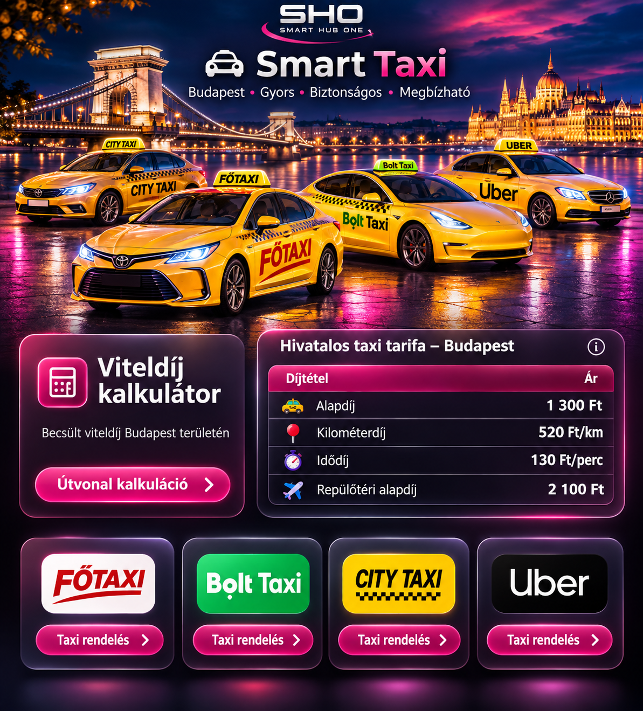

Itt vagyok · Élő térkép
Telefon GPS betöltése…

Budapest · 2026-os hivatalos tarifa. Az út hosszát és a 15 km/h alatti haladás / várakozás idejét külön add meg. Ez becslés, nem taxaméter.
Budapest, 2026. augusztus 1-jétől. Azonos hatósági tarifa valamennyi fővárosi engedéllyel működő taxinál.
| 🚕 Alapdíj | 1 300 Ft |
| 📍 Kilométerdíj | 520 Ft/km |
| ⏱️ Idődíj | 130 Ft/perc |
| ✈️ Reptéri alapdíj | 2 100 Ft |
Idődíj a rendeletben meghatározott lassú haladásnál és várakozásnál merül fel. A reptéri alapdíj helyettesíti a normál alapdíjat, nem hozzáadódik.